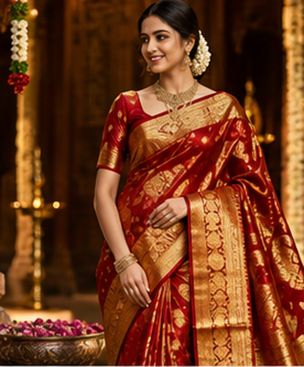
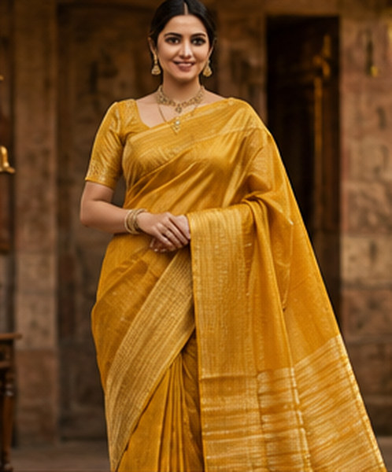
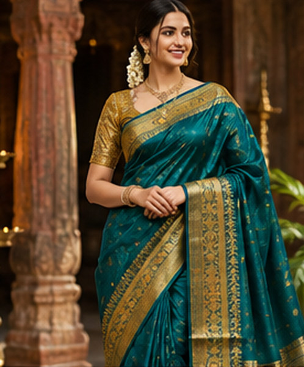
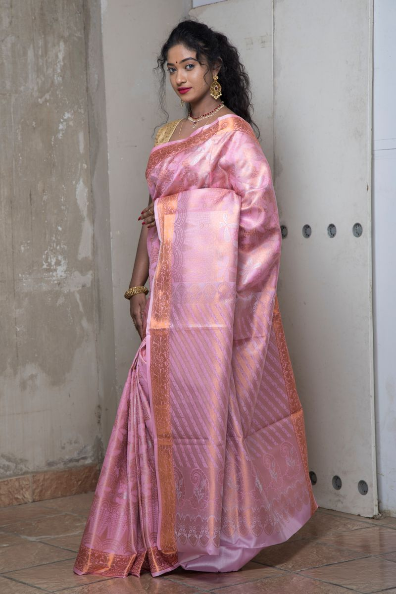
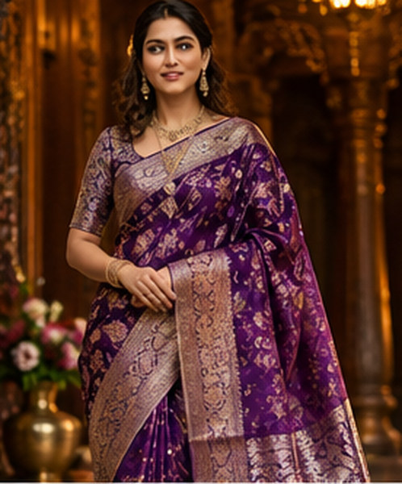
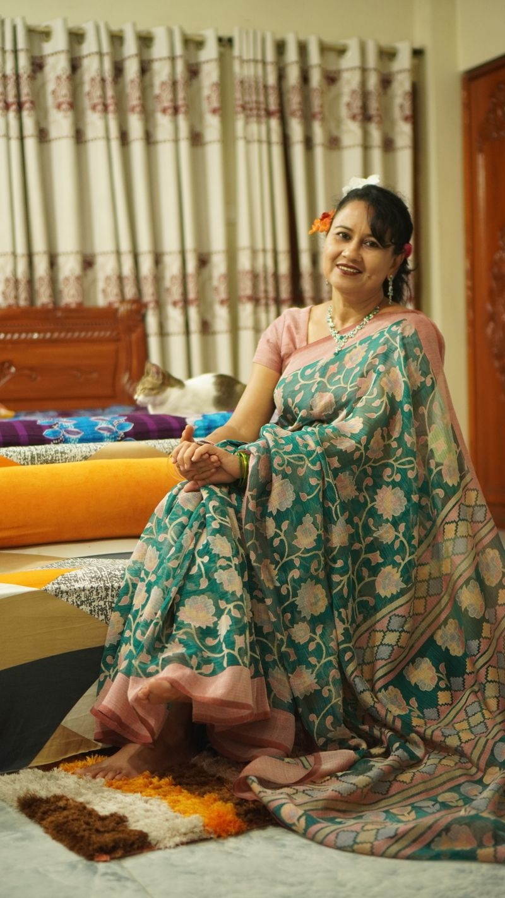
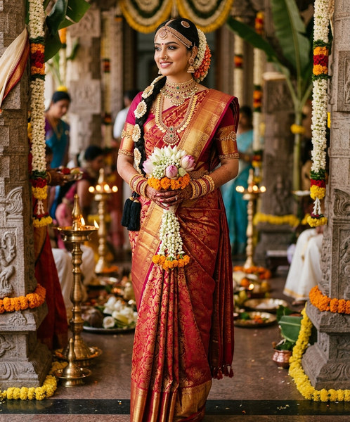
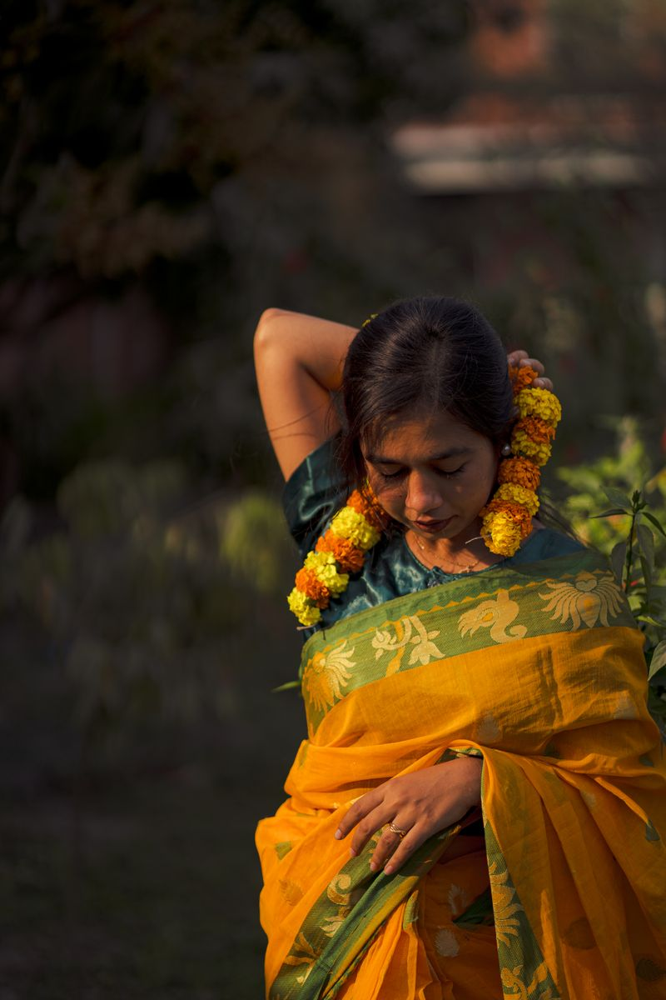

THE MUHURTHAM ATELIER / 01
THE MUHURTHAM ATELIER / 01Woven for your forever.
An intimate edit of bridal silk inspirations—ceremonial colour stories, distinctive pallus and beautiful drapes for the moments you will always remember.
A saree for the moment.
A memory for a lifetime.
From vibrant muhurtham hues to quieter wedding-family ensembles, discover the details that can make your celebration feel beautifully yours.
Choose a colour with meaning.
Explore beloved bridal colours and find a tone that suits your ceremony and personal style.
A collection for every wedding moment.
From the first family gathering to the muhurtham and reception, explore nine different directions for a memorable saree look.

Classic red & gold
Expressive ceremonial tones and statement borders.
Explore Red Silks →
Antique gold edit
Luminous weaves with refined gold detail.
Explore Golden Silks →
Green & jewel tones
Rich colour and balanced heritage patterns.
Explore Green Silks →
Wedding-family elegance
Soft structure and celebratory colour for loved ones.
Wedding Guest Styles →
Evening celebrations
Deeper hues and graceful festive drapes.
Explore Reception Looks →
Light & luminous
Airy drapes for engagement and pre-wedding occasions.
Explore Organza →
Temple maroon classics
Rich maroon tones with traditional zari details for the main ceremony.
Explore maroon sarees
Reception soft silks
Fluid soft-silk drapes with a gentle sheen for evening celebrations.
See soft silk editsBanarasi heirloom hues
Classic Banarasi brocades for brides who want woven detail and regal presence.
View Banarasi bridal picksThe beauty is in the details.
Your bridal saree can be chosen one detail at a time: the border framing your silhouette, the pallu's pattern, the weight of the weave and the comfort of your drape.

Inspired by traditions, chosen by you.
A short edit of distinctive bridal-appropriate sarees from the demonstration collection.
Every celebration has its own style.
Explore saree ideas for each special function—without repeating the same look.
A moment of tradition
Explore ceremonial tones, borders and a meaningful bridal palette.
Explore styling guide 02 / RECEPTIONDress for the evening
Consider fluid drapes and subtle shine for an elegant celebration.
Explore sarees 03 / NALANGU & FAMILYJoy in every detail
Fresh colours and comfortable choices for lively family gatherings.
Explore stylesThe art of bridal styling.
A few thoughtful pairings can bring a complete look together.


A closer look at the weave.
From small recurring motifs to the pallu's statement pattern, textile details create the character of a traditional saree. Explore the design as a complete drape, not simply a folded piece of fabric.
Understand Zari & WeavesBridal questions,
thoughtful answers.
Helpful things to consider before choosing your celebration look.
Ask Us a QuestionHow do I choose my muhurtham saree colour?
Begin with your ceremony preferences and family traditions, then compare red, maroon, gold and green options against your jewellery and lighting.
What should I look for in the pallu?
Consider pattern scale, drape weight and how much of the pallu you want to show. A richly decorated pallu can become the main styling feature.
How early should I begin exploring options?
Starting early gives you time to compare fabrics, coordinate blouse details and arrange any fitting or styling services independently.
Can I request a showroom visit?
You can submit a demo visit enquiry through the Contact page. Actual appointments, address and availability must be confirmed by the business.
For the day you'll always remember.
Find your bridal inspiration or enquire about visiting the showroom.